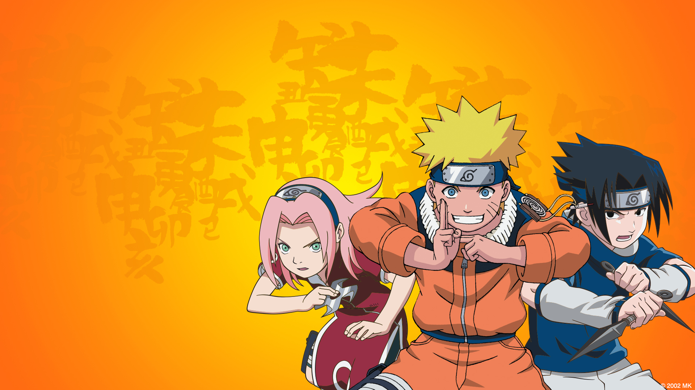
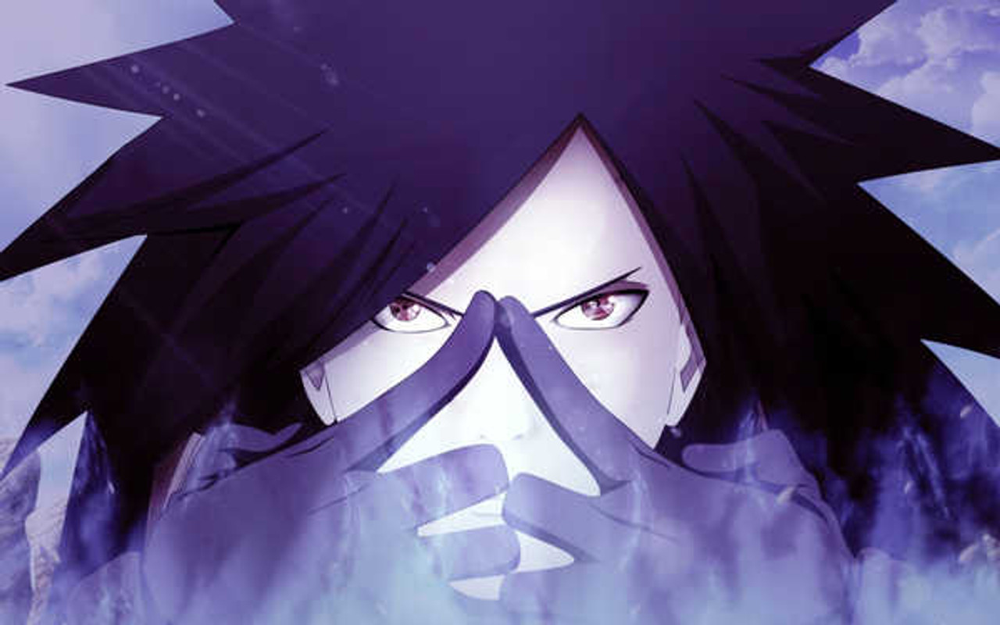

Tentang Naruto
Website ini dibuat sebagai bagian dari tugas kuliah untuk belajar membuat website responsif. Tema yang dipilih adalah Naruto, sebuah manga dan anime populer karya Masashi Kishimoto.




Naruto menceritakan kisah Naruto Uzumaki, seorang ninja muda yang bercita-cita menjadi Hokage, pemimpin desa Konoha. Bersama teman-temannya seperti Sasuke, Sakura, dan mentornya Kakashi, ia menghadapi berbagai tantangan, musuh, dan mengungkap kekuatan sejati dalam dirinya. Cerita ini penuh dengan tema persahabatan, kerja keras, dan pengorbanan.